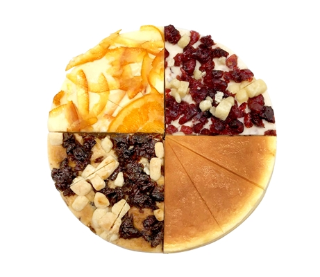

台灣心之和乳酪創立於2005年。在大多數年輕人選擇到更為繁華的都市發展時，
創始人劉育維先生懷著成熟而精湛的手藝回到家鄉創業，沒有驚心動魄的歷險故事，
僅憑著樸實的堅持，和對食材的尊重，在未經功利化污染的純樸小鎮開啟了自己的乳酪人生。
得過國際大獎，也受顧客喜愛的乳酪達人，十幾年來以慢而快樂的方式，觸動著吃貨們挑剔的心。
心之和乳酪沒有華麗的外表裝飾，所有美學均來自對食材本身的尊重。
我一直認為，想要烘焙出好味道，有三種配方必不可少堅持、樸實與匠心。

春上布丁蛋糕
起士公爵
亞尼克
課後心得